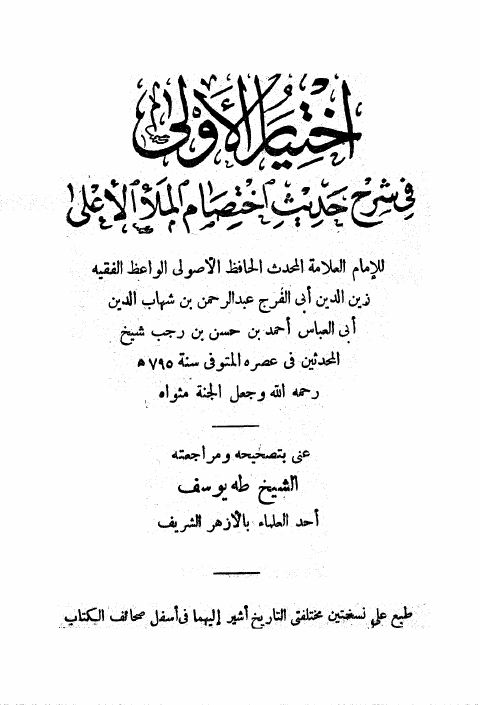

اختيار الأولى في شرح حديث اختصام الملأ الأعلى- ت. طه
Authors: ابن رجب الحنبلي
Editors: طه يوسف
Publishers: دار الطباعة المحمدية
Download Downloads need an internet connection.
- Country
- القاهرة، مصر
- Edition
- 1
- Volumes
- 1
- Pages
- 97
- Type
- كتاب
- Category
- الحديث وعلومه
- Subcategory
- المسانيد الأخرى والجوامع
Description
**▫️ العنوان: اختيار الأولى في شرح حديث اختصام الملأ الأعلى- ت. طه** ▪️ المؤلف: #عبد_الرحمن_البغدادي_بن_رجب_الحنبلي ▫️ المحقق: #طه_يوسف ▪️ الناشر: #دار_الطباعة_المحمدية ▫️ بلد النشر: القاهرة، #مصر ▪️ الطبعة: 1 ▫️ عدد الأجزاء: 1 ▪️ الصفحات: 97 ▫️ نوع الوعاء: #كتاب ▪️ التصنيف الرئيسي: #الحديث_وعلومه ▫️ التصنيف الفرعي: #المسانيد_الأخرى_والجوامع ۪